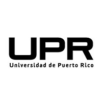

Go To College
¿Qué es Go To College?
En muchas ocasiones debemos tomar decisiones importantes como lo es nuestro futro profesional y no sabemos exactamente en que basarnos para tomar la decisión correcta. Go To College es un proyecto creado con el propósito de conectar estudiantes de cualquier parte de Puerto rico que estén próximos a completar sus estudios a nivel superior con las distintas instituciones universitarias del país.
¿Cómo funciona?
- Identificar mediante una prueba de orientación vocacional las destrezas e intereses del estudiante.
- Sugerencia de alternativas en carreras universitarias basado en los resultados de la prueba vocacional en combinación con el perfil personal y académico del estudiante.
- Identificar las instituciones universitarias en las cuales se ofrece la carrera seleccionada por el estudiante y sus oportunidades de ser admitido en base a sus resultados de College Board, GPA y/o IGS.
- Facilitar información referente al proceso de admisión de la institución universitaria seleccionada por el estudiante.
- Coordinar visitas a los campus y completar procesos de admisiones en las instituciones universitarias de interés.
Test vocacional
La prueba vocacional es un recurso que se emplea en el proceso de orientación vocacional para ayudar a los estudiantes a elegir una carrera. La prueba vocacional le permite al estudiante saber qué carrera estudiar o cuál es su verdadera vocación. Se trata de una herramienta muy útil al momento de ayudar a los jóvenes a reflexionar sobre sus gustos y preferencias, valorando también sus habilidades en las distintas áreas ocupacionales. El propósito principal de la prueba vocacional consiste en descubrir y reflexionar sobre los intereses del estudiante, sus habilidades y las tendencias en el ambiente académico. Para ello se deben plantear diferentes interrogantes como por ejemplo cuáles son las aspiraciones del alumno, dónde quiere trabajar en el futuro, qué capacidad de adaptación tiene, a fin de ir explorando diferentes tópicos hasta encontrar la profesión que más se ajuste a su perfil.

Haz tu prueba aqui
Explora tus alternativas de estudio
Al escoger una carrera profesional, debes seleccionar donde comenzar tus estudios. En algunos casos, dicha selección resulta simple ya que solamente una institución universitaria ofrece la carrera deseada, pero en ocasiones resulta más complicado ya que existen varias alternativas. Aquí puedes explorar algunas de las instituciones que ofrecen carreras universitarias en Puerto Rico.
| UPR | INTER | PUCPR | SAGRADO |
|---|---|---|---|
|  | |
|
|
| PUPR | UAGM | NUC | UAA |
| |
|
|
Go To College
Go To Colleges es meramente una idea de Jaime Martínez con miras a ser desarrollada en una aplicación móvil con el fin de motivar y/o ayudar a los ciudadanos de PR en su proceso hacia una carrera profesional.